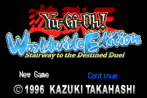

Yu-Gi-Oh! - Worldwide Edition - Stairway to the Destined Duel (USA) (En,Ja,Fr,De,Es,It)
Stateless / Passcode
Cartridge Identity
- Game Code
AYWE(FamilyAYW)- Header Title
YUGIOHWWE- Maker / Revision
A4/ rev0- ROM Size
- 16.0 MiB (16,777,216 B)
- Save Media
None / Unknown- SHA-256
c4c3ef5c8980996be049a3b6efd1c99b165e565405e040ea428801a14b8c8aa9- Engine / SDK Group
comm-014(25 families)
Screenshots


Cartridge Storage Architecture: Stateless / Passcode
Zero non-volatile battery hardware: This cartridge PCB contains ROM only (no SRAM, Flash, or EEPROM chips). Progression is preserved via on-screen passcodes or session-only gameplay. No
.sav file is generated or required.
ROM Assets, Compression & Audio
- BIOS Compression
- LZ77 (
0x10): 0 streams · RLE (0x30): 0 streams - ROM Pointer Tables
- 32 tables (0 pointing to validated compressed streams)
- SDK Backup Tags
SRAM_V113
Hardware MMIO Subsystems
ppu_display0x800266c,0x8077114save_bus_sram_flash0x8088eb8
Regional Variants & Revisions (Family AYW)
- Yu-Gi-Oh! - Worldwide Edition - Stairway to the Destined Duel (Europe) (En,Ja,Fr,De,Es,It) (
AYWP, 16 MiB) - Yu-Gi-Oh! Duel Monsters International - Worldwide Edition (Japan) (En,Ja,Fr,De,Es,It) (
AYWJ, 16 MiB) - Yu-Gi-Oh! Duel Monsters International - Worldwide Edition (Japan) (En,Ja,Fr,De,Es,It) (Rev 1) (
AYWJ, 16 MiB)